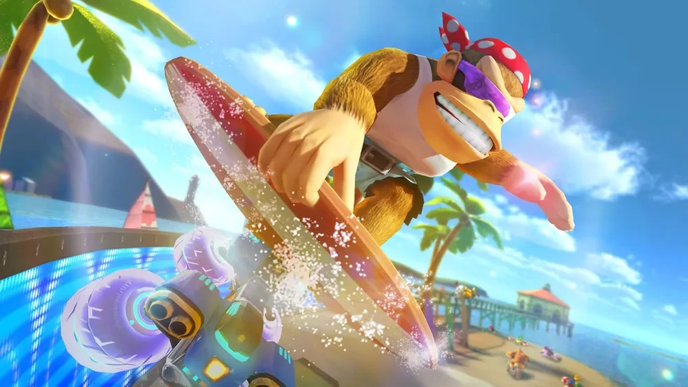
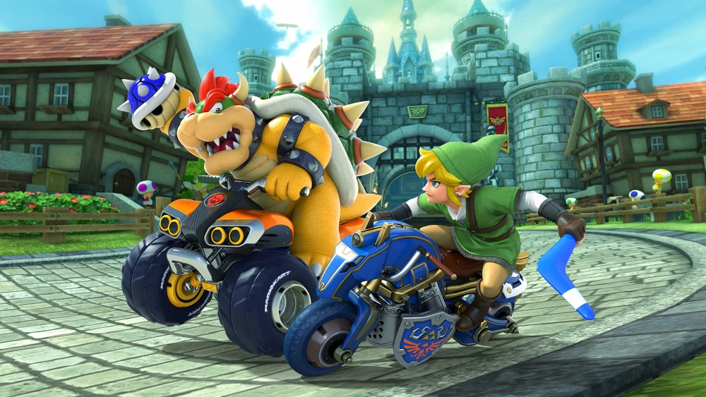
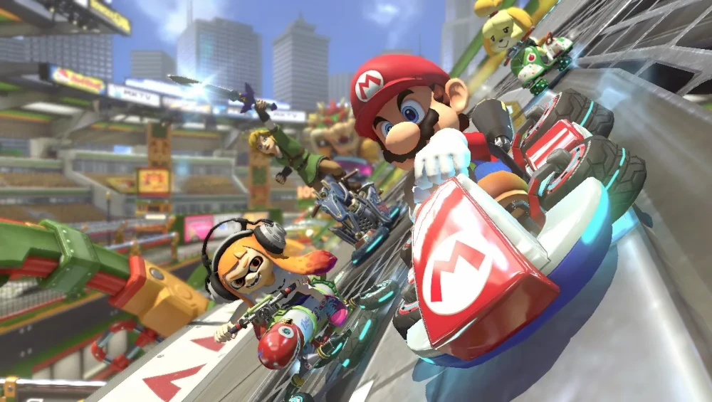

Algunos Personajes + Tutorial Completo
Kong

Koopa - Link

Mario

Tutorial
Mario Kart 8 es un videojuego de carreras desarrollado y publicado por Nintendo para la consola Wii U. Es la undécima entrega de la serie Mario Kart, octava en consolas de Nintendo. Fue lanzado en todo el mundo a finales de mayo de 2014, con 1,2 millones de copias vendidas en sus primeros cuatro días, convirtiéndose en el juego más rápidamente vendido de Wii U hasta la fecha. El 26 de junio de 2014, Nintendo registró unas ventas de 2 millones de copias en el primer mes a la venta.
Fue anunciado junto a Yoshi's Woolly World, Super Mario 3D World y un nuevo juego de la saga Super Smash Bros.
En el E3 2014, se anunció que en un futuro algunos títulos, entre ellos Mario Kart 8, tendrán soporte para la próxima línea de figuritas de Nintendo Amiibo.